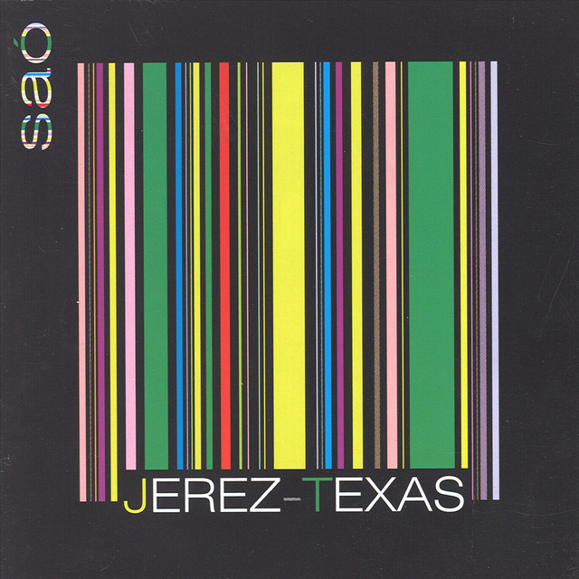

Jerez Texas - Sao



Información del álbum facilitada por discogs.com:
Fecha de lanzamiento: 2006
Géneros: Jazz, Rock, Latin
Estilos: Fusion, Flamenco, Jazz-Rock
Pais: Switzerland
Votos: Media de 5.0 con 3 votos
Sello: Unreleased Digital
Tracklist:
Celtic Fandango 4:35
Tangos Al Jerez 4:12
La Culpita 5:35
Couleur Café 4:18
La Foule 4:33
Siroco 5:01
Alegría De La Casa 4:58
Après La Pluie 3:58
Vital. Para Clara 3:42
Rumbamarga 4:26